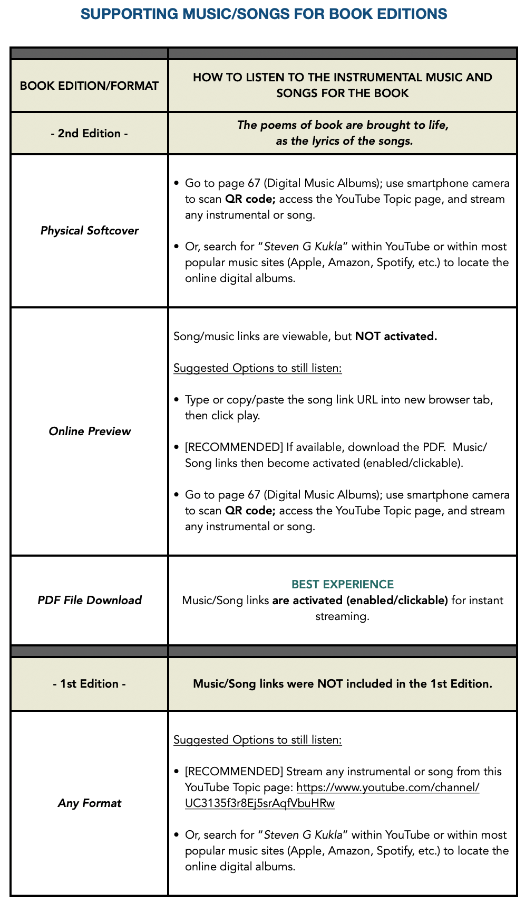

Guide
How to Listen
Editions, formats, and the best way to experience the music of Strong Roots, Good Fruit

Ready to Listen?
Music Page
Browse both album volumes and click through to YouTube playlists.
Go to Music → Vol. 1 on YouTubeStream the first album directly on YouTube.
Open YouTube → Vol. 2 on YouTubeStream the second album directly on YouTube.
Open YouTube → The BookRead or preview Strong Roots, Good Fruit — the source of the poems.
View Writing →